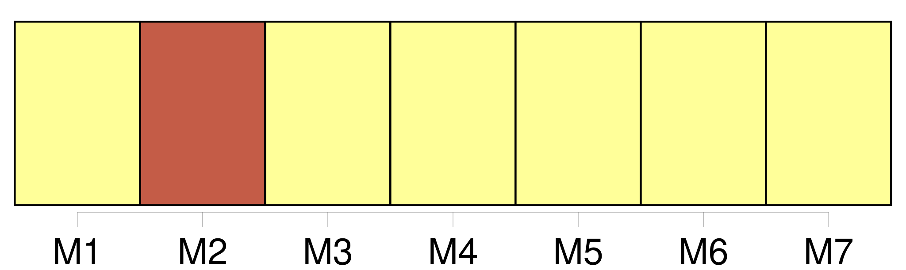
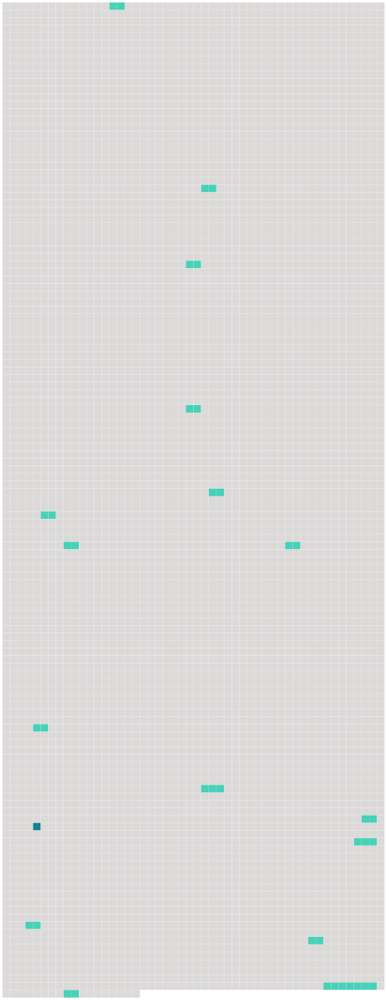

Longueur nb maillons : 17 mentions |
 |
Il pensait à ce qu’ il faisait là, à cette heure, dans [la rue] [61 phrases]
Christophe commence à retrouver [son chemin] dans le dédale de la journée. [36 phrases] Il a entendu dans [la rue] un chat, un chien, quelque chose de curieux. [59 phrases] Mais dès qu’ il a dépassé le coude [du chemin] et que les buissons le cachent aux regards, il change brusquement. [24 phrases] L’ insecte se sauvait : il lui barrait [le chemin] [3 phrases] Il savait bien que les poissons n’ ont pas coutume de manger une ficelle sans appât ni hameçon ; mais il pensait que pour une fois, et pour lui, ils pourraient faire une exception ; et il en vint, dans son inépuisable confiance, jusqu’ à pêcher dans [la rue] avec un fouet, à travers la fente d’ une plaque d’ égout. [10 phrases] Ils allaient par [les chemins] , au travers des champs labourés, qui sentaient bon et fort. [1 phrases]
Des corneilles énormes, posées de profil en travers de [la route] , les regardaient venir de loin et s’ envolaient lourdement à leur approche. [42 phrases] Ils se taisaient tous deux, ruminant, chacun à sa façon, ces histoires admirables ; – à moins que, sur [le chemin] , grand-père ne rencontrât un de ses nobles clients, faisant une promenade. [15 phrases] Au loin, dans la plaine, une voix de paysan interpelle ses bœufs ; le sabot d’ un cheval sonne sur [la route blanche] [13 phrases] Plus [le chemin] était mauvais, plus Christophe [le] trouvait beau. [4 phrases] Parfois, on rencontrait sur [la grande route] un paysan dans sa carriole. [30 phrases] Cette bête toute noire courait le long de [la route] , couchée sur le côté. [5 phrases] Elle formait des barrières en travers de [la route] [20 phrases] La voiture s’ éloignait : et l’ on se retrouvait à l’ entrée [du petit chemin creux près du Rhin] [1 phrases] [Le sentier] serpentait presque au ras de l’ eau. |
 |
Il est possible de télécharger la ressource sur la page Ortolang |
Si vous avez des questions ou vous voyez des erreurs, merci d'envoyer un mail à silvia.federzoni89@gmail.com |